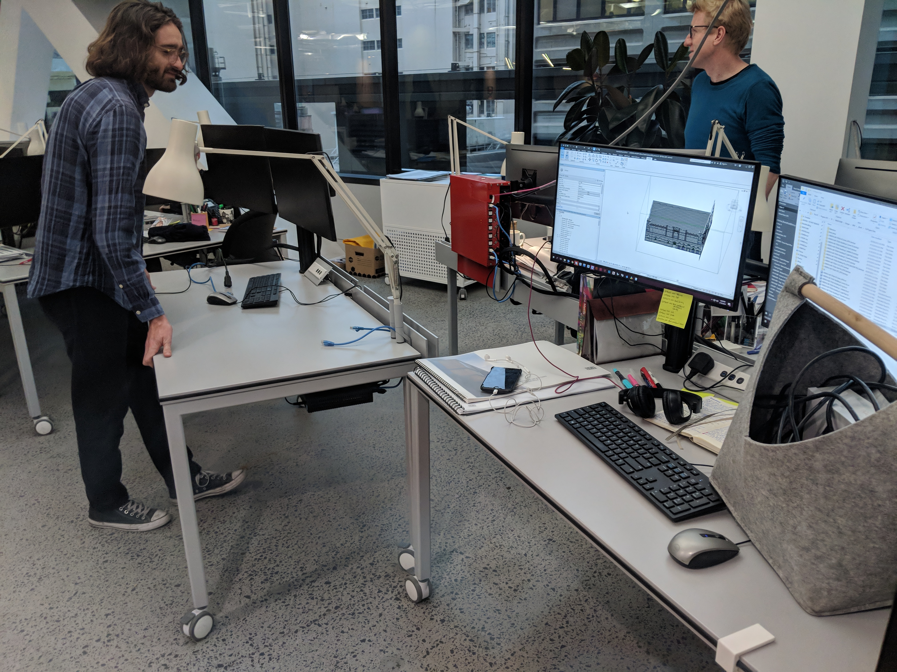
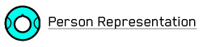
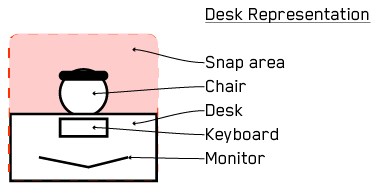

The combination of this page and the semi-working prototype is a specification for a seating plan designer.
We're looking for someone to help us get this project underway. Nobody on our team is a whizz with D3, we've made some progress, but we need your help to progress it. The following text tries to give some context to this idea.
We are an architecture studio in Sydney. We have an office of about 200 people. Deciding where they sit is quite a challenge as we need to consider how to get teams close to each other, and how to put people together to help them learn from each other. Making a seating plan drawing is currently done in a tedious and manual way, without any feedback. This means that the person making the plan is doing two hard things at the same time, which isn't ideal!
We'd like to make that process easier, and to provide some automatic, visual feedback on how the arrangement performs. This will be very simplistic to begin with, but will get more involved after this phase of the project.
As with all things, this is already slightly out of date, as we have a new system that allows people to move their own desks when they want to (they're all on wheels). This means that there will be a later system that tries to take this into account, but for now we'd like to solve this version of the problem.
We need a web based system that is smooth and straightforward to use. It should be extensible so that we can take the data it creates and do analysis on it. It should also be extensible so that we can overlay visualisation of the analysis metrics onto it. [TODO: more here]
We'd like to be involved fairly frequently in the development of this system. We don't want to meddle if you have an opinion about how to do it. We are going to be very available to ask questions. We'd like to share and review code through GitHub.
A seating plan is a document that takes a set fixed seat positions (desk/seat combinations) and assigns set of people to them. A person may have 1 or 0 desks. A desk can have any number of people.
A person is someone who works in the office. They are probably employed by us, but could be a student, a guest seconded from another company, or be renting a desk.
A desk is the combination of a table, a chair and a computer. There are desks that are fixed around the perimeter, there are mobile desks (although we can consider these fixed for this version of the software). There are seats that aren't desks, for instance in the kitchen and reception areas.
Who will use the software and what job are they hiring it to do?
Initally, specialist users who plan layouts for offices. These are expert users who will be willing to learn a system. They want to be able to make small, or sweeping, changes to the alocation of people to desks. They will be willing to invest some time to learn more complex techniques and interactions if it leads to an overall speed up.
In the future we'll make it available to all users so that they can explore the implications of a move that they might make themselves. These are casual users and are unlikely to take the effort to learn anything beyond the basic interactions.
The following diagrams are my way of communicating intent, not a description of how the finished system should look. The same applies to the semi-working prototype.
There needs to be a zoomable map that people can be placed on. This means that we'll need to be able to drag people around and snap people to seats. There also needs to be a parallel representation, presumably as a table. This needs to have the people who need to be seated, and also their metadata. This should be sortable by any column.
This list is not exhaustive, it's just what I have at the moment.
none. Dragging to the map would be nice to have as it would remove a point of cognative disonance as the user searches for the new entry.We currently assume that incoming data will be formatted like this:
[
{
"FirstName": "Abbie",
"LastName": "Galvin",
"login": "agalvin"
"Studio": "Sydney",
"loc": {"x": "0", "y": "0"},
"placed": false,
"onMap": true,
"team": [{"name": "kabaddi", "loading":0.8},
{"name": "cricket", "loading":0.2}] //Brian, thoughts on making this % of their time vs % of a full week? I.e. if someone works 4 days a week, should 1 day 0.25 or 0.2?
}...There may also be other data sources to put into the table that are joined from other datasets, using login as the key.